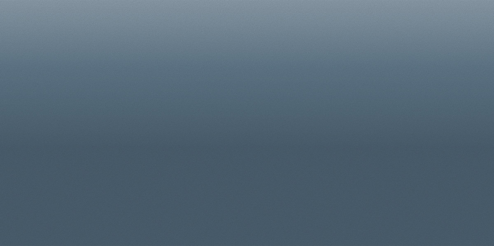
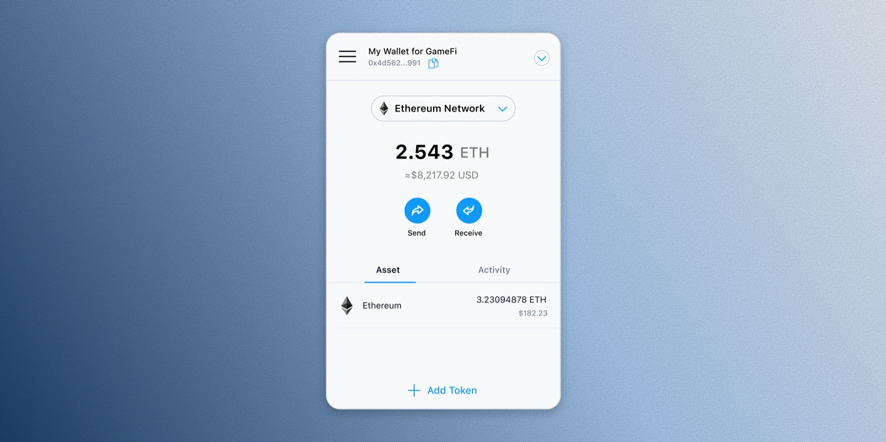

✦ SELECTED WORK
-
01 — Standardizing Cross-Region Compliance
Merging fragmented compliance flows into one consistent template.

-
02 — Simplifying the Crypto Deposit Flow
Removing friction from the path to first trade.

-
03 — Portfolio Visibility for Active Traders
Giving traders clarity into every position.
-
04 — Building the Wallet Extension from 0 to 1
Bringing DeFi to the browser, one click away.
